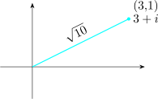
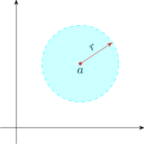
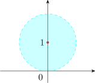
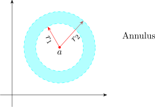
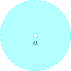

3 Elementary Point Set Topology of \(\mathbb {C}\)
Definition 3.1. A metric space is a pair \((X,d)\) where \(X\) is a set and \(d\) is a function from \(X\times X\) into \(\mathbb {R}\), called a distance function or metric, which satisfies the following conditions for \(x,y, z \in X\).
- 1.
- \(d(x,y) \geq 0\)
- 2.
- \(d(x,y) = 0\,\) if and only if \(\, x = y\)
- 3.
- \(d(x,y) = d(y,x)\,\) (symmetry)
- 4.
- \(d(x,z) \leq d(x,y) + d(y,z)\,\) (triangle inequality)
\(*\, B(a;r) = \big \{z \in \mathbb {C}:\, \left |z - a\right | < r\big \}\,\) (open ball of radius \(r\), centred at \(a\))
\(\left |z\right |:\,\) distance between 0 and \(z\) in the complex plane.

\(\implies \, \left |z_1 - z_0\right |:\,\) distance between complex numbers \(z_1\) and \(z_0\) in the complex number.

\(B(i;1) = \{z \in \mathbb {C}:\,\left |z - i\right | < 1\}\)

\(*\, \overline {B(a; r)} = \big \{ z \in \mathbb {C}: \, \left |z - a\right | \leq r\big \}\,\) ( closed ball of radius \(r\) centred at \(a\))
\(*\, \overline {B(a ; r)} - B(a ; r) = \big \{z\in \mathbb {C}:\, \left |z - a\right | = r \big \}\,\) ( sphere)
\(\implies \quad \) upper half plane is the set \[\boxed {\pi = \big \{z \in \mathbb {C}:\, \operatorname {Im} (z) > 0\big \}}\]
\(\implies \quad \) Annulus: A set of the kind \[\boxed {\big \{ z \in \mathbb {C}:\, r_1 < \left |z - a\right | < r_2\big \}}\]

Definition 3.3. The deleted neighbourhood of point \(a\in \mathbb {C}\) is the set \[ \big \{z \in \mathbb {C}:\, 0 < \left |z - a\right | < r\big \}\] for some positive real number \(r\). This is denoted by \(B'(a ; r)\).

Definition 3.4. A set \(\, A \subseteq \mathbb {C}\,\) is open if for every \(z \in A\), there exist \(r>0,\, r(z)\,\) such that \(\, B(z ; r )\subseteq A\).
Example 3.5. \(B(a ; r)\,\) is an open set.
Proof
Let \(\, z \in B(a; r) = \big \{ z \in \mathbb {C}:\, \left |z -a\right | < r\big \}\)
\(\left |z - a\right | < r\,\) so \(\, 0 < r - \left |z - a\right |\)
Let \(\, \delta \,\) be \(\ni \, 0 < \delta < r - \left |z - a\right |\)
Then if \(\, w \in B(z; \delta )\) \begin {align*} \left |w - z\right | < \delta \, \implies \, \left |w - a\right | & \leq \left |w - z\right | + \left |z - a\right |\\ & \leq \delta + \left |z - a\right |\\ &< r \end {align*}
Since \(\, (0 < \delta < r - \left |z - a\right |)\,\) we have that \(\,\left |w - a\right | < r\,\) so \(\, w \in B(a;r)\)
\(\implies \, B(z; \delta ) \subseteq B(a; r)\)
Since \(z\) was arbitrary point of \(B(a;r),\, B(a;r)\,\) is an open set.
Questions on this section
Stuck on something here? Ask below and it stays attached to this topic.